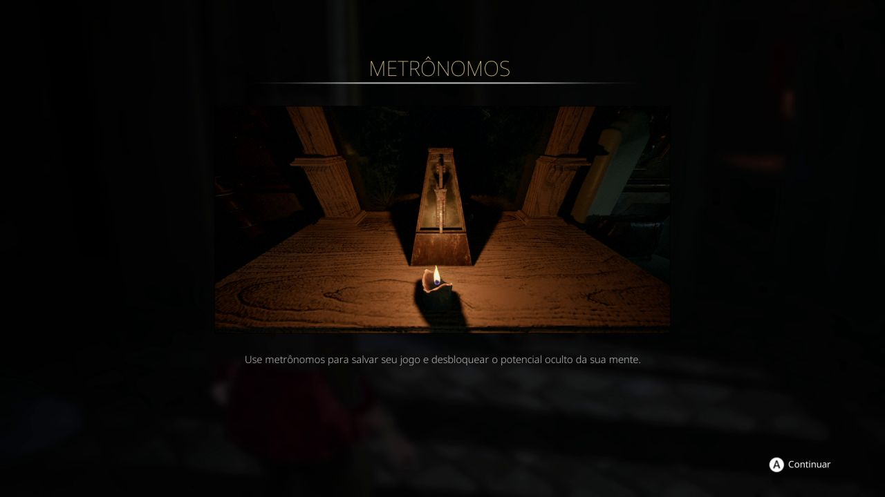
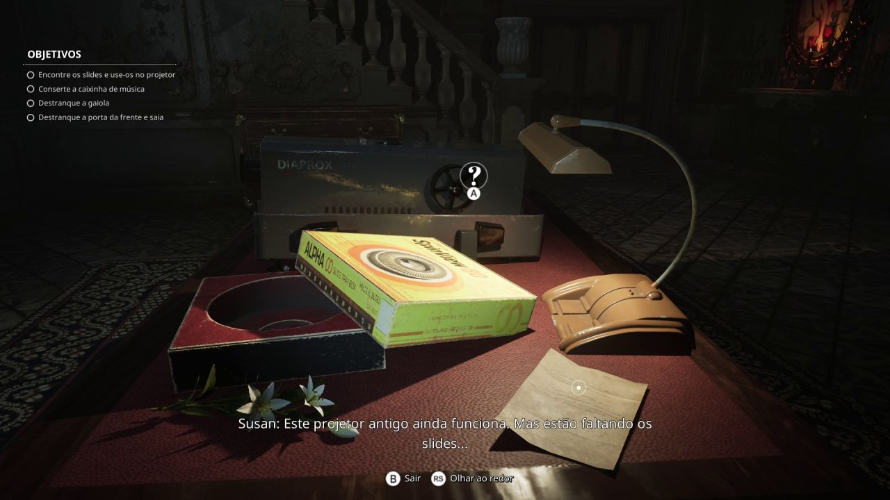
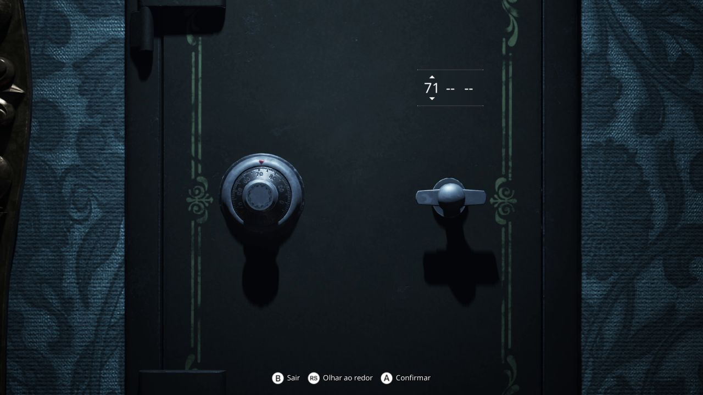
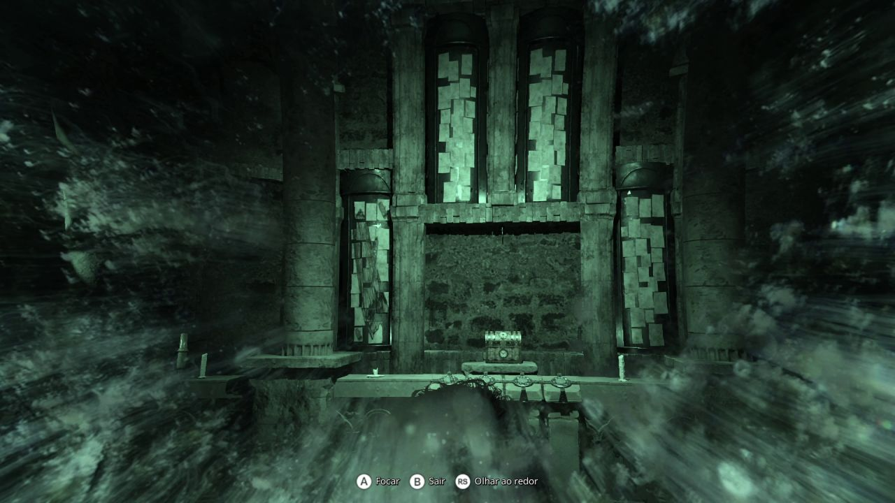
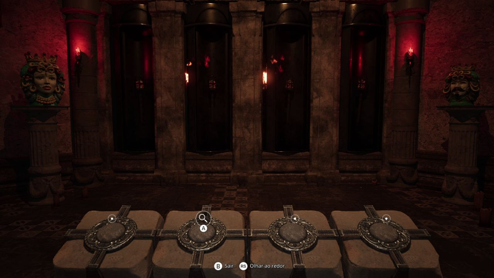
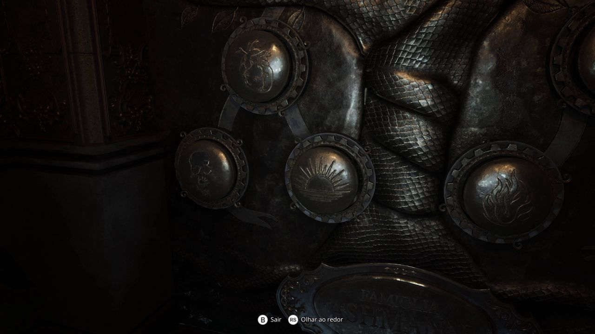

Spoiler warning. This walkthrough follows the full campaign of Remothered: Red Nun's Legacy, from arriving at Villa Ashmann to the ending. It covers every puzzle solution and tips to escape the stalkers. Item names follow the game's English version where we could confirm them; our gameplay videos are in Brazilian Portuguese, so on-screen text in the screenshots is in Portuguese. All images come from Bora de Play's gameplay.
How to use this walkthrough
First playthrough. Follow the chapters in order. There is no real combat, so the most important thing is knowing where to go before you open a door. Every metronome saves your game; use one whenever you pass by. Keep your flashlight off when you can: the nuns see the light from far away.
Already playing? Find the spot where you are stuck in the table and jump straight to the solution.
| Where I am stuck | Go to |
|---|---|
| Can't get into the villa | Arriving at Villa Ashmann |
| Music box or Doves Medal | Sala delle Meraviglie and the library |
| Plant blocking the door or spinning pillars | The convent and the first pillar puzzle |
| Safe combination | Safe: 73, 31, 52 |
| Mirrors, Lindsay's room or pillars with a mirror | Secrets in Mirrors |
| Residential wing, Eclipse door or the Bride | Residential wing |
| Going in circles without finding the way | The confusing staircase |
| Puppet order | Dumbwaiter and puppets |
| Flame pillars or alchemical door | Flame pillars and the alchemical door |
| Rope, pulley and the final stretch | Catacombs and ending |
Campaign route
- Arriving at Villa Ashmann
- Sala delle Meraviglie and the library
- The convent and the first pillar puzzle
- The family safe and the front door
- Secrets in Mirrors
- Residential wing and the Bride
- Cellar, broken metronome and moths
- Dumbwaiter and puppets
- Flame pillars and the alchemical door
- Catacombs and ending
How to survive the stalkers
- Hide early. Sofas, wardrobes and beds are hiding spots. Stay still until the tense music ends and the footsteps fade.
- Flashlight off. They see the light from the end of the corridor. Turn it on only to read or search for items.
- Defense items. Scissors, nails and throwable objects let you break free when one of them grabs you. Improvised weapons, such as shovels and iron bars, push the enemy back and can also block hits, but they wear out with use. You carry one item of each type at a time.
- Don't run for no reason. Running makes noise and draws anyone nearby. Run only once you have been seen.
1. Arriving at Villa Ashmann
Goal: get into the villa and go through the first visit to the convent.
- The front doors are jammed. Go around the entrance to the left to the grate on the ground, climb down and follow the underground passage. When you climb out of the pit, you are already inside the villa.
- Read the newspaper clipping about Agata's disappearance. When you hear someone coming, hide under the highlighted furniture and wait.
- Interact with the metronome in the room. It takes Susan to the convent. Pick up the Rusty Key (its tag reads Gloria) near the bed and follow the corridor with the cribs to the Red Nun scene.
- Back in the villa, the tutorial explains that metronomes save the game and unlock powers. The first one lets you hide under sofas.


2. Sala delle Meraviglie and the library
Goal: complete the music box and take the medal to the metronome.
| Where | What to do | How I know it worked |
|---|---|---|
| Art gallery, cabinet near the fireplace | Take the compass rose door key. | The door with the compass rose opens. |
| Sala delle Meraviglie (Room of Wonders) | Open the blue book on the vanity to find the library key. | The library becomes accessible. |
| Library, projector table | Read the note with the safe combination clue. It stays saved in your inventory. | The projector says the slides are missing. They come in chapter 4. |
| Library upper floor | Take the Groom Figurine from the small table. Go back around the balcony, because the lower door locks. | The item appears in your inventory. |
| Music box in the gallery | Place the groom next to the bride. | The drawer releases the Doves Medal. |
| Caged metronome in the reception hall | Use the medal on the metronome locked in the cage. | Susan returns to the convent. |
In this area, one nun starts watching the library from the mezzanine and another comes down the stairs. In our gameplay, the most dangerous encounter was stepping out of a wardrobe with her standing right at the door. Before leaving a hiding spot, wait for the music to calm down.



3. The convent and the first pillar puzzle
Goal: clear the passage taken over by the plant and solve the pillars.
- In the convent, retrocognition shows memories of the past. Use it on the glowing spots to hear the voices and open the way.
- A plant blocks the door. Follow the memory in the corridor to find the Mysterious Fluid and use it on the plant.
- In the room with four pillars, read the book on the pedestal. Each pillar spins through a series of figures. Stop each one on the right figure, from left to right: Woman, Snake, Skull and Heart.

4. The family safe and the front door
Goal: find the slides, open Boris Ashmann's safe and unlock the front door.
- The library office door has no doorknob. Go to the baths (hammam), near the reception hall, and knock three times on the mosaic of nymphs at the waterfall. The doorknob drops from the mosaic. In our gameplay, a second nun was sleeping there and woke up at the noise. Have a defense item ready.
- Fit the doorknob on the office door next to the library stairs. Take the slides from the desk and load them into the projector.
- The slides show pairs of figures. Add up each pair: birds with flowers, moths with flames, fish with leaves.
Safe: 73, 31, 52
| Slide | Count | Number |
|---|---|---|
| Birds and flowers | 7 birds and 3 flowers | 73 |
| Moths and flames | 3 moths and 1 flame | 31 |
| Fish and leaves | 5 fish and 2 leaves | 52 |
In our Portuguese version, the note mentioned trees and flowers, but the slide shows birds. Use the birds. The safe is behind the painting of birds in flight, in the Sala delle Meraviglie: push the frame aside and turn the dial to 73, 31 and 52. Inside are Boris's letter and the Ashmann Family Ring.
Use the ring on the locked door that leads outside and run to the car. The following scene sends Susan back into the villa, now with a new stalker.


5. Secrets in Mirrors
Goal: get the mirror power, enter Lindsay's room and recover the necklace.
- Inspect the metronome on the stage. It unlocks Secrets in Mirrors: look through mirrors to reveal doors, keys and objects hidden in the reflection.
- In the nuns' corridor, use the mirror to find the compartment with the key to Sister Lindsay's room (Suor Lindsay). In the room, collect the Jesus Figurine and fit it into the empty slot on the double door.
- The next room repeats the pillar puzzle, but the figures are invisible. Go to the mirror at the back of the room and look through it. Each pillar shows its figure in the reflection; stop each one when the figure faces forward.
- Take the Handmade Necklace from the box and place it on the statue of the nun in the next room. The scene takes you back to the villa.

6. Residential wing and the Bride
Goal: get into the residential wing and start collecting the puppets.
- Follow the mirrors through the mansion: they reveal new passages, including one through the gallery fireplace. The Bride, a new stalker, roams this part. She is slower than the nun, but you can hear her chains and footsteps. Wait for her to pass while hidden.
- In the research room, the Crown Key is among the photos hanging on the line. Use it on the exit with the red light.
- The residential wing's door is locked. Climb in through the window near the barrels, go down to the laundry and up to see the Eclipse door. Gloria's key is in the study of Stefano's room, which you reach by crawling through the low opening in the bathroom.
- In the toy room, the mirror reveals the small theater. The Daughter, the first puppet, is there. The theater note explains that the hooks only accept the puppets in the right order.
- In the destroyed room, use the mirror on the statue to take The Father. Watch out: a nun with a flamethrower shows up in this area. If she hasn't seen you, stay hidden and wait.

7. Cellar, broken metronome and moths
The confusing staircase
In our gameplay, this part stalled a whole episode. The wing has two staircases going down that look alike. One ends at a locked door with nothing behind it. The other leads to the cellar and the rest of the area. If you only find locked doors, go back and take the other staircase.
- In the cellar, near the broken metronome, take the small key with a musical keychain.
- Use it on the box in the music room and take the metronome arm.
- Install the arm on the broken metronome. It unlocks Moth Manipulation: interact with a nest to guide the moths for a limited time and use them on the cocoons that block doors and passages.
From here on, the nun releases moths that grab you. To break free, press the prompted button very fast. Use the moths' time to go straight to the cocoon; don't stop to explore on the way.
↑ Contents8. Dumbwaiter and puppets
Goal: complete the four puppets and open the secret door.
- Take the lever and install it on the dumbwaiter in the upstairs dining room. Operate it to drop the Mother puppet into the kitchen, one floor below.
- The Mother is broken. Take her to the workbench and repair her with the moth power.
- The Son is in the engine compartment of the yellow toy car.
- In the theater, hang them from left to right: Mother, Father, Son and Daughter. The secret door opens beside it.

9. Flame pillars and the alchemical door
Goal: open the alchemical door in the reception hall.
- First guide the moths to free the controls. Then turn the four pillars until all of them show the flame facing forward.
- Read the poem of the four signs. It gives the order of the door symbols: Skull, Water, Rising Sun and Heart. Don't touch the fire or the moon.
- The mechanism is in the chapel. In our gameplay, the door didn't react because a stone button in the middle of the mechanism, almost invisible, still had to be pressed. If nothing happens, look for that button.
- Activate the four symbols in order. The villa's mysterious door opens.


10. Catacombs and ending
Goal: open the catacomb gate and reach the ending.
- The catacombs still have a nun on patrol. Explore with the flashlight off and note the hiding spots before moving on.
- Gather the rope and the pulley. One of them is behind a mirror covered by a cocoon, and the nearest moth nest is far away. Take the moths and go in a straight line, without stopping, to the mirror.
- Attach the rope and pulley to the gate mechanism near the save point and operate it.
- Watch the final sequence. After the scene, you control the Red Nun and must hunt the three fleeing novices: one hides in a wardrobe, another under a piece of furniture and the last one is further ahead, praying. Use the repeated-press prompts when they appear.
- The game has a single ending. Stay until the end: there is a scene after the credits.

Route and puzzle references. All puzzles — TPose Gaming, Final stretch — TPose Gaming, Walkthrough, part 2 — Into Indie Games.
↑ Back to top